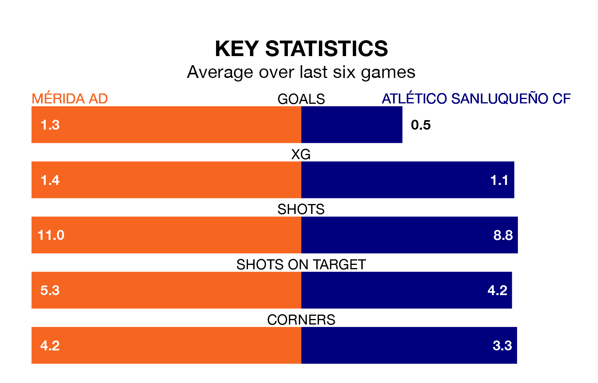

Atlético Sanluqueño CF come to the Estadio Romano to play Mérida AD on late Sunday in poor form, having collected just four points from their last six games.
The visitors have won one and drawn one of their last six fixtures, while Mérida AD have two wins and a draw.
Mérida AD are 15th in the table after 33 games, of which they have won 10 and drawn eight, earning 38 points.
Atlético Sanluqueño are one place ahead of the home team in 14th, with nine wins and 11 draws putting them on the same number of points.
With 29 goals in 33 games so far this season, Mérida AD are scoring at below the league average rate with 0.9 goals per game. And they are conceding more than average, letting in 41 goals at a rate of 1.2 per game.
The visitors are also below average scorers, with 1.0 goal per game, compared to a league average of 1.1. They have conceded 1.1 goals per game.
In Francisco Mwepu, Atlético Sanluqueño have one of the league's most on-form strikers so far this season. He has notched seven goals in 21 appearances, to sit sixth in the scoring charts.
His goal rate of one every 208 minutes is quicker than that of Daniel Sandoval Fernández, Mérida AD's top scorer with a goal every 352 minutes, and a total of four goals in 18 games.
Mérida AD's last match was on April 21, a 2-0 loss against UD Melilla.
Atlético Sanluqueño beat Recreativo de Huelva 1-0 last time out, on April 20, with Joaquin González on the scoresheet.
Updated: 07:59 (UTC), 26/04/24